Pessoal e empresa, no mesmo app
A sua vida e a sua empresa num app só.
Doze apps que trabalham juntos — o seu dia de um lado, a equipe e o caixa da empresa do outro.
Uma chave troca de um mundo para o outro, sem misturar nada.
Que bom te ver!
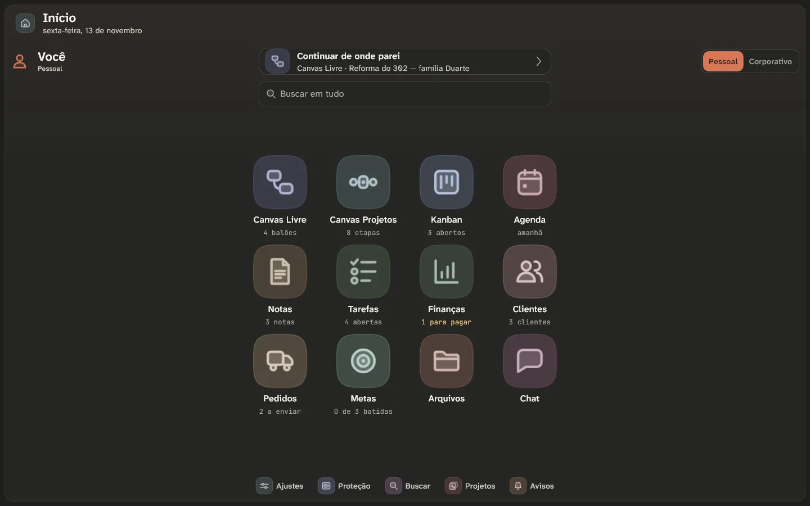
O problema
Hoje o trabalho mora espalhado.
E a cada troca de app, alguma coisa se perde no caminho.
Ideiasno caderno
Tarefasnum aplicativo
Dinheironuma planilha
Conversano WhatsApp
No Canvas, é um lugar só.
- A mesma ideia vira etapa, cartão, data e tarefa — sem copiar nada.
- No computador, no celular e no navegador.
- Tudo igual em todos os aparelhos.
Os doze apps
Cada um faz uma coisa bem feita.
Toque num app para ir direto a ele — ou siga em frente.
App 1 de 12 · Canvas Livre
Pense solto, sem limite de espaço.
Um quadro sem fim para as ideias: escreva onde quiser e ligue uma coisa na outra.
Balões em qualquer lugarToque duas vezes e escreva.
LigaçõesPuxe a bolinha de um balão até o outro.
GruposJunte o que é do mesmo assunto.
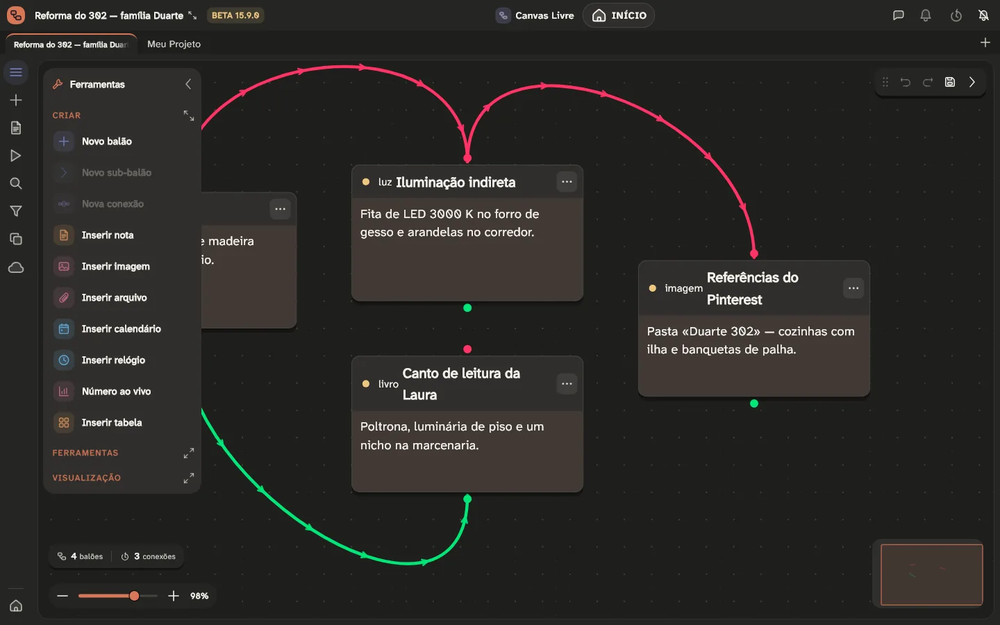
App 2 de 12 · Canvas Projetos
Saiba em que pé está cada projeto.
O fluxo do trabalho — início, etapas, decisões e fim — num desenho só.
O caminho inteiroInício, etapas, decisões e fim.
O que fazer agoraCada fase lista as etapas que faltam.
Lado a ladoO Organizar abre os ramos para comparar.
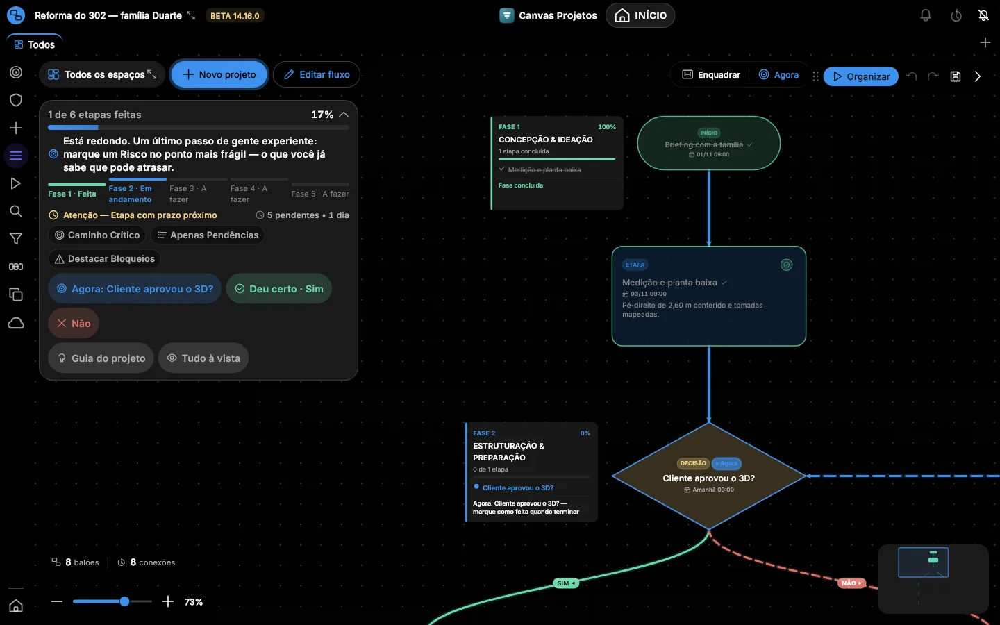
App 3 de 12 · Kanban
O trabalho andando, coluna por coluna.
Cartões que passam de A fazer para Fazendo e para Feito.
ColunasA fazer, Fazendo e Feito — ou as suas.
Do seu ramoQuadros prontos para o seu tipo de negócio.
FocoLimite para o que está em andamento.
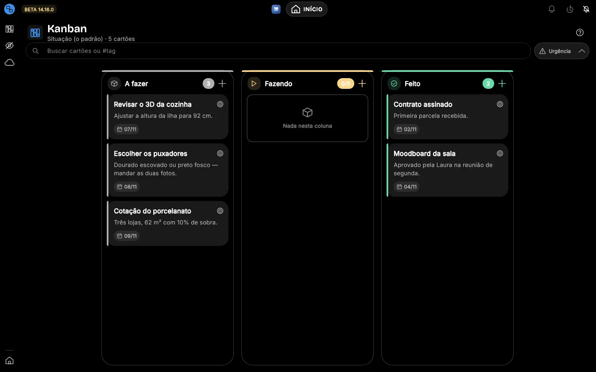
App 4 de 12 · Agenda
O mês à vista, e o aviso na hora.
Os compromissos no calendário, e o aparelho lembra por você.
O mês inteiroOs dias com compromisso aparecem marcados.
Lembrete na horaOu uma hora antes, ou na véspera — mesmo com o app fechado.
No computadorO mês e o dia lado a lado.
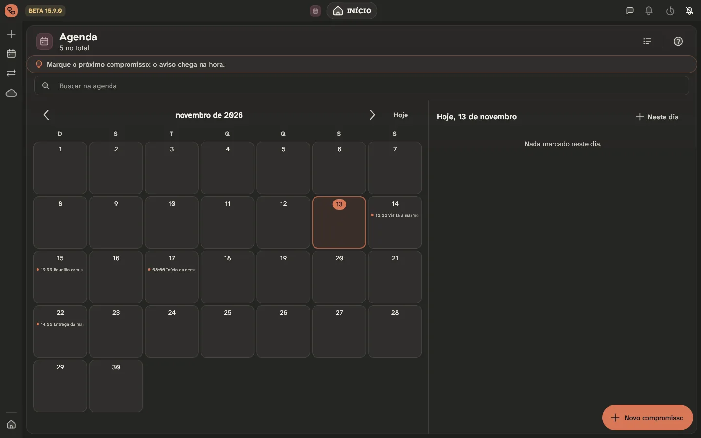
App 5 de 12 · Notas
Escreva uma vez, cole em qualquer lugar.
Notas formatadas como no Word, sem símbolo no meio do texto.
Formatação de verdadeNegrito, listas e títulos, como você vê.
Pronta para colarWhatsApp, Instagram e e-mail, com o formato de cada um.
Corretor sem internetEm português e em inglês, com sugestão.
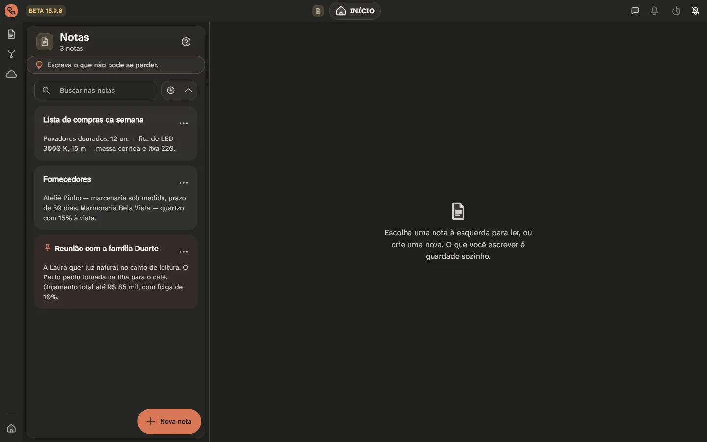
App 6 de 12 · Tarefas
A lista do dia, sem esquecer nada.
O que fazer hoje, com prazo e hora.
Prazo e horaCada tarefa sabe quando vence.
As que se repetemVoltam sozinhas no próximo dia.
As feitasSaem da frente e deixam a lista limpa.
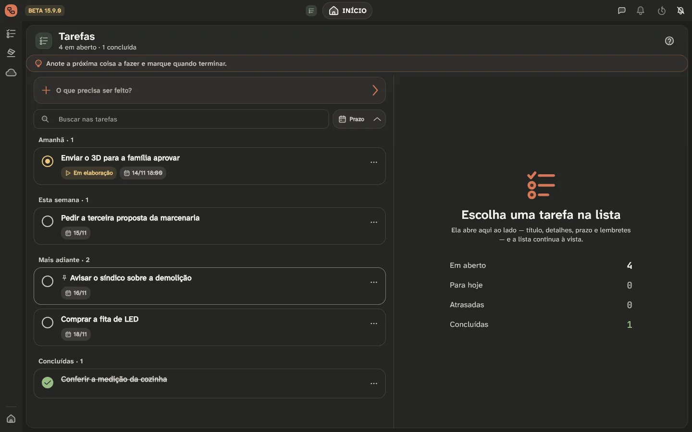
App 7 de 12 · Finanças
O caixa da empresa, sem planilha.
Quatro sistemas separados de propósito — o dinheiro da empresa nunca se mistura com o da casa.
Meu NegócioEstoque, frente de caixa, contas e fiado.
Meu DinheiroContas, cartão e metas da casa.
Meus ServiçosQuanto vale a sua hora, de verdade.
Meu PreçoO preço certo, com custo e margem.
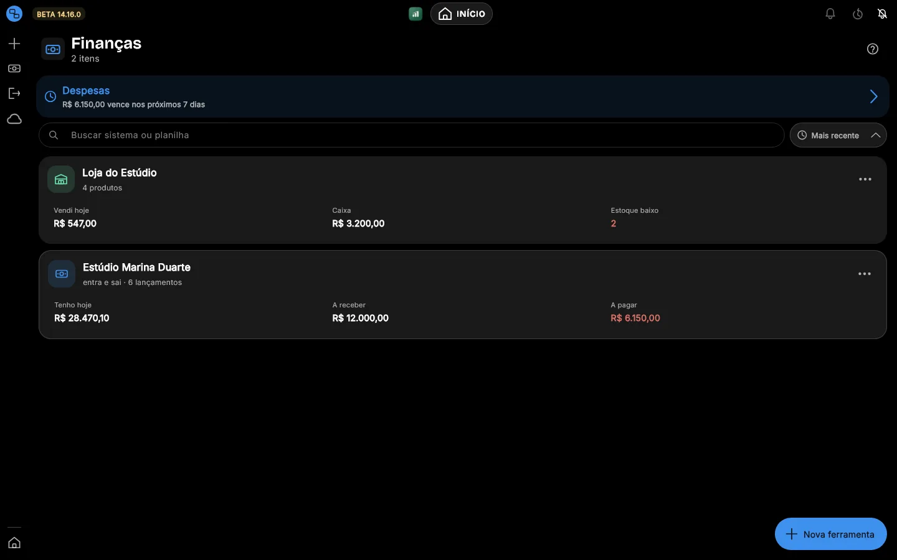
App 8 de 12 · Arquivos
Os documentos da empresa, no seu Drive.
Documentos, fotos e anexos de todos os apps, num lugar só.
No seu Google DriveNa sua conta, não na nossa.
Quantas contas quiserCada uma com o seu espaço.
Pastas da empresaA equipe acha o que precisa.
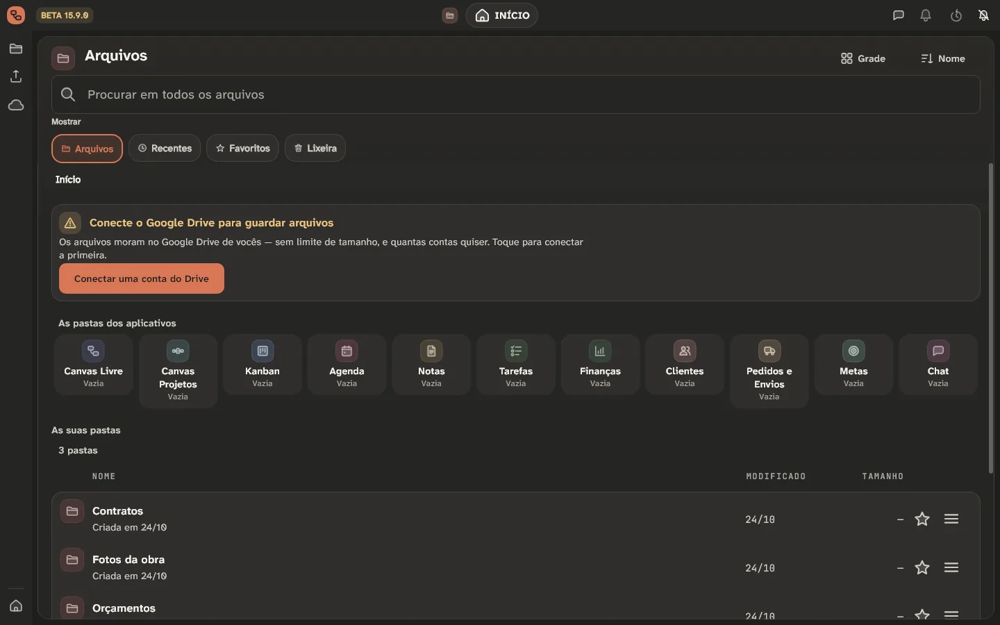
App 9 de 12 · Chat
A conversa da equipe, junto do trabalho.
No privado ou em grupo, sem sair do Canvas.
Privado e em grupoNo lado pessoal e no da empresa.
Tudo na conversaFotos, áudio, arquivos e enquetes.
Do app para a conversaMande o que está no Canvas direto para o grupo.
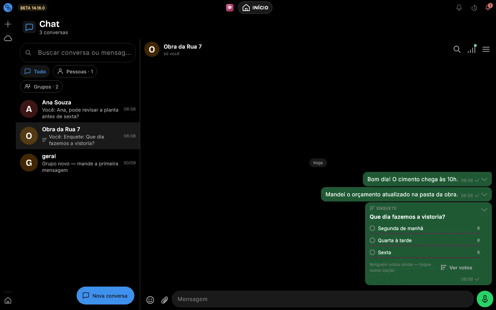
App 10 de 12 · Clientes
Quem compra de você, num lugar só.
Cada cliente com o que comprou, o que deve e quando voltar a falar.
Histórico de comprasVendas, pedidos e atendimentos juntos.
Quem deveO fiado e o limite de cada um, à vista.
Voltar a falarLembrete de retorno para não perder a venda.
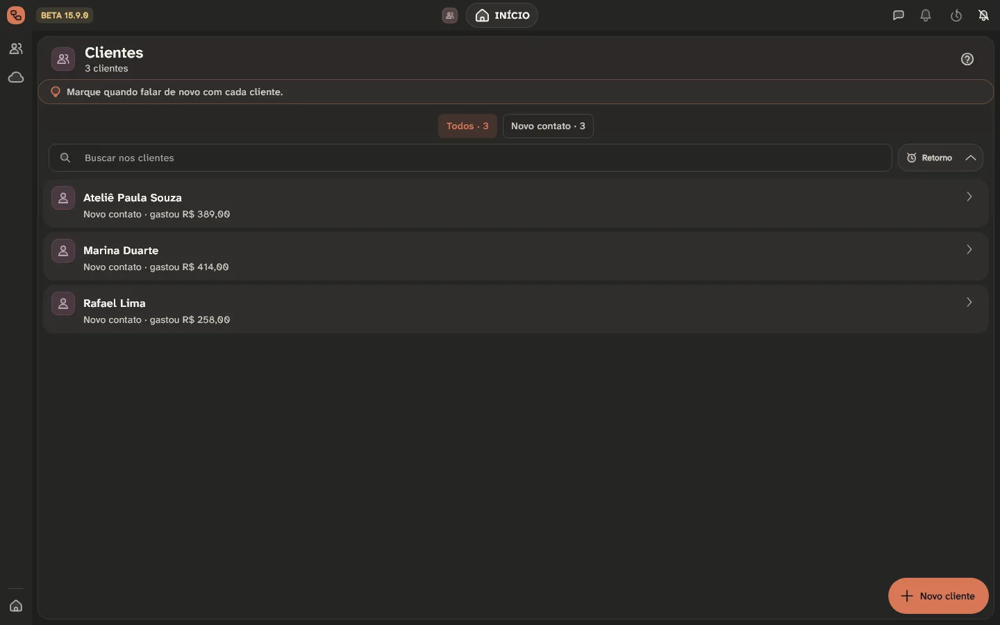
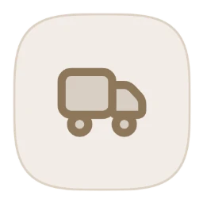
App 11 de 12 · Pedidos e EnviosDo pagamento à entrega, sem perder pedido.
Cada pedido anda numa esteira: pago, separando, enviado, entregue.
A esteira do pedidoPago, separando, enviado, entregue.
Rastreio ao ladoTransportadora, código e prazo de cada envio.
Vira vendaCom um toque o pedido entra no caixa.
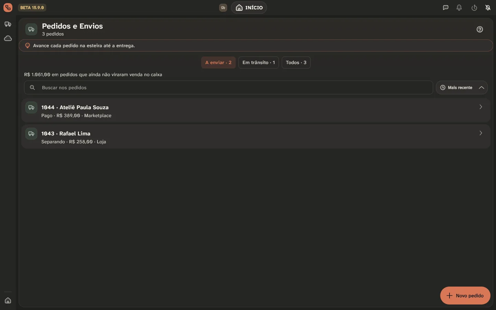
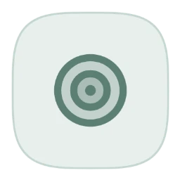
App 12 de 12 · MetasO alvo do mês, e quanto falta.
Faturamento, lucro ou número de vendas, por semana, mês ou trimestre.
O alvo e o caminhoQuanto já foi feito e quanto falta.
Do seu jeitoPor semana, mês ou trimestre.
Sem conta à mãoO número sai das vendas que já estão no app.
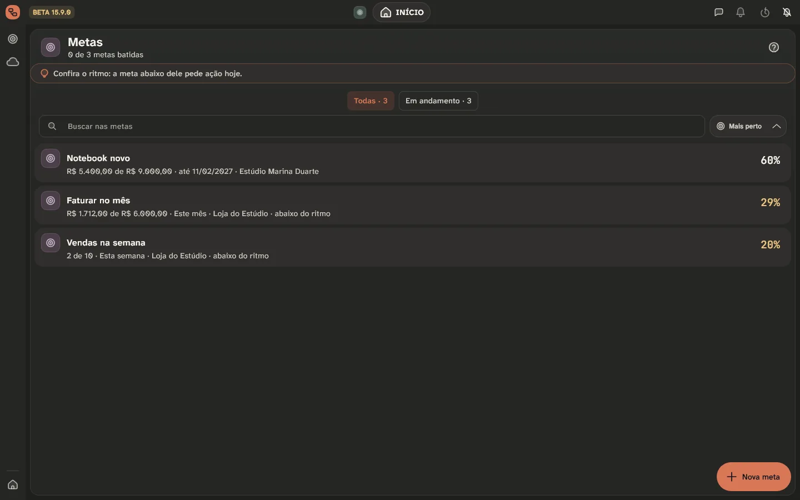
Do seu jeito
Funciona sem internet. E os dados são seus.
Sem internetTudo abre e grava no aparelho; sincroniza quando a rede volta.
No seu Google DriveOs arquivos ficam na sua conta, não na nossa.
Ao vivoA equipe vê a mudança na hora, em qualquer aparelho.
EquipeConvide por e-mail e escolha quem edita e quem só lê.
Pessoal e empresaDois lados separados, trocados com uma chave.
CofreCópias automáticas para voltar no tempo.
Onde usar
No computador, no celular ou aqui mesmo.
Para entrar você precisa do convite. Já pode deixar o app instalado.
Android
Android 6 ou mais novo · instala por cimaNavegador
iPhone, Mac e qualquer computador Sempre na versão mais novaO que chegou por último
Beta fechado
O acesso é por convite. Peça o seu.
Abrimos aos poucos, para cuidar de cada pessoa que entra.
- 1Você se apresenta — dois minutos.
- 2Uma pessoa lê — não é robô.
- 3O convite chega por e-mail, com o passo a passo.
Dúvidas
O que todo mundo pergunta.
Quanto custa?
Durante o beta, nada. Quem entra agora ajuda a moldar o produto — e cada sugestão é lida.
Preciso de internet?
Para entrar pela primeira vez e para sincronizar. Depois, o Canvas funciona inteiro sem rede.
Onde ficam os meus dados?
No seu aparelho, primeiro. Os arquivos vão para o seu Google Drive. O servidor guarda só o necessário para a equipe e o Chat funcionarem.
Serve para o meu negócio?
Se você vende produto, o Meu Negócio nasce montado para o seu ramo. Se vende hora, o Meus Serviços calcula quanto ela vale.
Funciona no iPhone e no Mac?
Ainda não há aplicativo próprio. Neles, use pelo navegador.